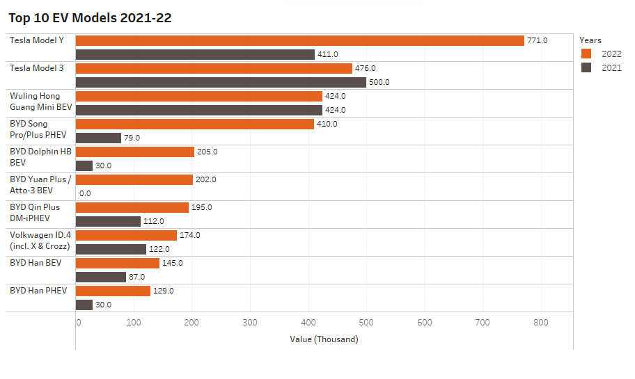

Evolving Horizons: Unplugging the Future of Electric Vehicles
Focus Areas
- EV Adoption Trends Across Regions
- Influential Factors in EV Adoption
- Manufacturer Comparison and Charging Infrastructure
- Sustainable Future: CO2 Emissions
- Conclusion
Tech Stack
- Python
- Pandas
- Plotly
- NumPy
- Reveal.js
- Tableau
Investigate the patterns of electric vehicle adoption across time,
contrasting adoption rates among different regions
EV Sales over the Years
BEV :
Battery Electric Vehicle PHEV: Plug-in Hybrid Electric
Vehicle
Over 25 million electric
cars were on the road in 2022, 60% relative to
2021 and more than 5 times the stock in 2018
EV Adoption Rate Among Regions
- Global EV sales were 10 million units in
2022, a 55% rise from 2021
- China, accounting for over
half of global electric car sales with 5.9 million units,
experienced a 60% increase
Influential Factors in EV Adoption
- Purchase Price
- Range (Distance travelled with one recharge)
- Government Incentives
Purchase Price
-
Reduction in Price:
-
Growing number of automakers
entering the EV market
-
Cost-efficient production of EV
components
-
Rise in Price
-
Advanced features and Premium
models
-
Semi-conductor shortage in
Covid-19
Range
- Range Anxeity: Running out of battery charge
before reaching the destination or a charging station
- Range Enhancement: Advancements in battery
materials and engineering to increase battery capacity
Government Incentives
- Providing financial aid
through grants and subsidies
- Offering benefits such as
reduced/waived road taxes, registration fees, and other vehicle-related
levies
- Establishing public charging
stations and facilitating discounted charging services
- Allowing access to
low-emission zones and city centers

Manufacturer Comparison and Charging Infrastructure
Feature Analysis

Top EV Models Around The Globe

Charging Stations in Germany
Total
Charging Points till Feb 2023: 71,263
Sustainable Future: CO2 Emissions
How much C02 a medium size car emits per km?
- If it is electric :
75g
- If it is gasoline:
241g
Worst Case Vs Best Case Scenario
| Electric car with Chinese-made battery, driven in Poland |
Electric car with Swedish-made battery, driven in Sweden |
| CO2 Emission Reduction: 37% compared to
petrol |
CO2 Emission Reduction: 83% compared to
petrol |
Vehicles Carbon Emission Over Time
Conclusion
Global Shift Towards
Electric Mobility
Factors influencing EV
adoption, such as purchase price, range and government incentives
highlight the diverse aspects of this transformation
The collective efforts
of governments, industries, and individuals become paramount in driving
positive change
Make informed choices,
and unite efforts for a sustainable future

The road ahead is
long, but together, we are driving change – one electric km at a
time